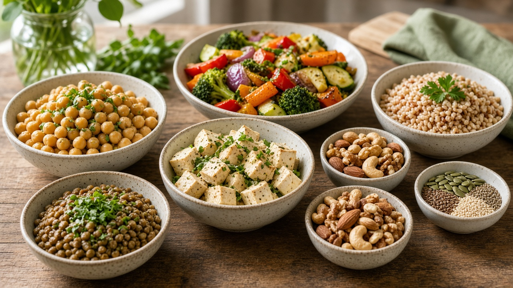
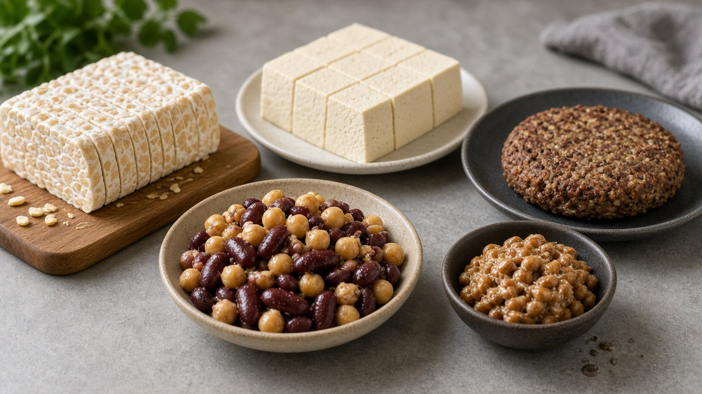
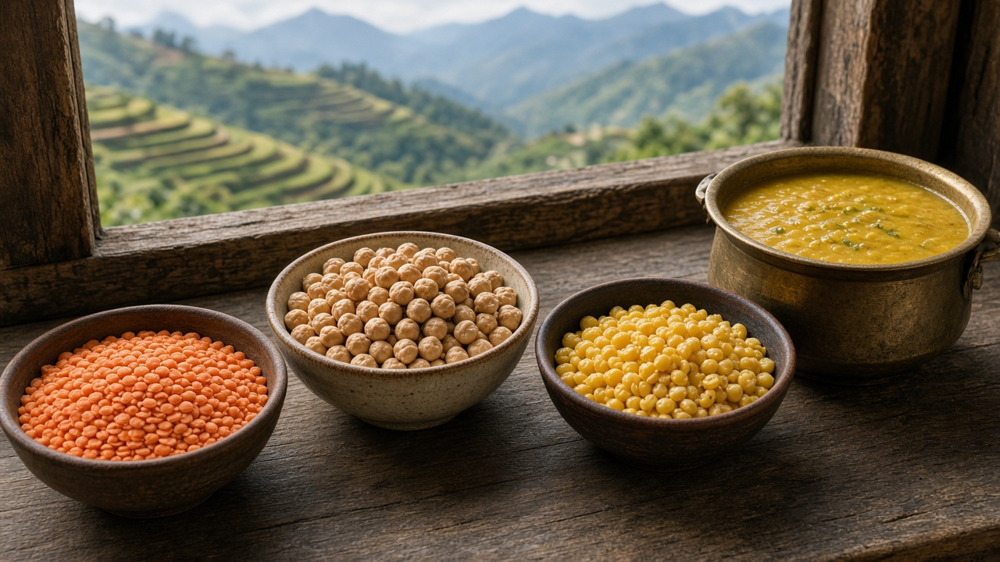

Plant-Based Diets and Alternative Proteins
Published on August 20, 2026

Plant-based diets emphasize foods derived from vegetables, fruits, legumes, grains, nuts, and seeds while reducing or eliminating animal products. Research links well-planned vegetarian and vegan patterns to lower risks of heart disease, hypertension, and certain cancers when they provide adequate protein, iron, vitamin B12, and omega-3 fats. From an environmental perspective, plant proteins generally require less land, water, and energy per kilogram than beef or lamb, and produce fewer greenhouse-gas emissions. Pulses such as lentils and chickpeas fix nitrogen in soil, supporting sustainable crop rotations. Shifting dietary patterns even partially—through meatless days or smaller portions—can significantly reduce individual food footprints.
Alternative proteins expand choices beyond traditional livestock. Fermentation-derived ingredients, cultured meat grown from animal cells, and extruded plant blends mimic familiar textures in burgers and sausages. Insects offer efficient feed conversion for animal agriculture and direct human consumption in many cultures. Mycoprotein from fungi provides fiber-rich meat substitutes. Each technology carries distinct resource profiles, regulatory pathways, and consumer acceptance hurdles. Processed alternatives are not automatically healthier; sodium, saturated fat, and ultra-processing must be evaluated label by label. Whole-food plant proteins—beans, tofu, tempeh—remain affordable staples in diverse cuisines worldwide.
Transitioning food systems toward more plant-forward eating requires farmer support, fair pricing, culinary education, and inclusive policy. Livestock producers need pathways for diversification rather than abrupt market shocks. School menus, hospital meals, and workplace cafeterias can model balanced plant-rich options. Public messaging should avoid shaming while highlighting flavor, culture, and nutrition. Governments can align agricultural subsidies with legume production and research on protein crops suited to local climates. By combining dietary shifts with sustainable farming practices, societies can nourish growing populations while easing pressure on forests, freshwater, and climate stability for generations to come.

वनस्पति आधारित आहारले तरकारी, फलफूल, दाल, अनाज, बदाम र बीउबाट प्राप्त खानालाई प्राथमिकता दिन्छ र पशुजन्य उत्पादन घटाउँछ वा हटाउँछ। राम्रो योजना गरिएको शाकाहारी र पूर्ण शाकाहारी ढाँचाले पर्याप्त प्रोटीन, फलाम, भिटामिन ब₁₂ र ओमेगा-३ वसा उपलब्ध भए मुटु रोग, उच्च रक्तचाप र केही क्यान्सरको जोखिम घटाउँछ। वातावरणीय दृष्टिले, वनस्पति प्रोटीनले प्रायः प्रति किलोग्राम गाई वा भेडा भन्दा कम जमिन, पानी र ऊर्जा चाहिन्छ र कम हरितगृह ग्यास उत्सर्जन गर्छ। मस, भटमास जस्ता दालले माटोमा नाइट्रोजन स्थिर गर्छ, दिगो बाली घुमाउ समर्थन गर्छ। आहार ढाँचा आंशिक परिवर्तन—मास रहित दिन वा सानो भाग—ले व्यक्तिगत खाद्य पदचिन्ह धेरै घटाउँछ।
वैकल्पिक प्रोटीनले परम्परागत पशुपालनभन्दा बाहिर विकल्प फैलाउँछ। किण्वनबाट प्राप्त सामग्री, कोशिकाबाट विकसित मास र वनस्पति मिश्रणले बर्गर र ससेज जस्तो बनावट दिन्छ। कीराले पशु आहार र मानव उपभोगमा कुशल खाद्य परिवर्तन दिन्छ। च्याउबाट प्राप्त माइकोप्रोटीनले फाइबरयुक्त मास विकल्प दिन्छ। प्रत्येक प्रविधिको छुट्टै स्रोत प्रोफाइल, नियामक मार्ग र उपभोक्ता स्वीकारण चुनौती हुन्छ। प्रशोधित विकल्प स्वतः स्वस्थ हुँदैन; सोडियम, संतृप्त वसा र अत्यधिक प्रशोधन लेबल अनुसार मूल्यांकन गर्नुपर्छ। साबुत वनस्पति प्रोटीन—दाल, टोफु, टेम्पे—सस्तो र विविध परिकारमा मुख्य खाद्य हुन्छ।
खाद्य प्रणालीलाई वनस्पति-केन्द्रित खानातर्फ सार्न किसान समर्थन, न्यायपूर्ण मूल्य, पाककला शिक्षा र समावेशी नीति चाहिन्छ। पशुपालक उत्पादकलाई अचानक बजार झट्का बिना विविधीकरणको मार्ग चाहिन्छ। विद्यालय मेनु, अस्पताल भोज र कार्यालय क्याफेटेरियाले सन्तुलित वनस्पति-समृद्ध विकल्प प्रस्तुत गर्न सक्छ। सार्वजनिक सन्देशले लाज लगाउनुभन्दा स्वाद, संस्कृति र पोषण प्रदर्शन गर्नुपर्छ। सरकारले दाल उत्पादन र स्थानीय जलवायु अनुकूल प्रोटीन बाली अनुसन्धानसँग कृषि अनुदान मिलाउन सक्छ। आहार परिवर्तन र दिगो खेती मिलाएर समाजले बढ्दो जनसंख्यालाई पोषण दिएर जङ्गल, मिठो पानी र जलवायु स्थिरतामा दबाब कम गर्न सक्छ।

पौध-आधारित आहार सब्ज़ियों, फल, दाल, अनाज, बदाम और बीज से प्राप्त भोजन को प्राथमिकता देते हैं और पशु उत्पाद घटाते या हटाते हैं। अच्छी योजना वाले शाकाहारी और पूर्ण शाकाहारी पैटर्न पर्याप्त प्रोटीन, आयरन, विटामिन ब₁₂ और ओमेगा-३ वसा होने पर हृदय रोग, उच्च रक्तचाप और कुछ कैंसर का जोखिम घटाते हैं। पर्यावरणीय दृष्टि से, पौध प्रोटीन प्रति किलोग्राम गाय या भेड़ से कम भूमि, पानी और ऊर्जा चाहते हैं और कम हरितगृह गैस उत्सर्जन करते हैं। दाल जैसी मसूर, चना मिट्टी में नाइट्रोजन जोड़ते हैं, दिगो फसल चक्र का समर्थन करते हैं। आहार पैटर्न थोड़ा बदलना—मांस रहित दिन या छोटे हिस्से—व्यक्तिगत खाद्य पदचिह्न काफी घटाता है।
वैकल्पिक प्रोटीन पारंपरिक पशुपालन से परे विकल्प फैलाते हैं। किण्वन उत्पाद, कोशिका से उगाया मांस और पौध मिश्रण बर्गर और सॉसेज जैसा बनावट देते हैं। कीट पशु आहार और मानव उपभोग में कुशल खाद्य परिवर्तन देते हैं। कवक से प्राप्त माइकोप्रोटीन फाइबर-युक्त मांस विकल्प देता है। प्रत्येक तकनीक का अलग संसाधन प्रोफाइल, नियामक मार्ग और उपभोक्ता स्वीकृति चुनौती है। प्रसंस्कृत विकल्प स्वतः स्वस्थ नहीं; सोडियम, संतृप्त वसा और अत्यधिक प्रसंस्करण लेबल अनुसार मूल्यांकन करें। साबुत पौध प्रोटीन—दाल, टोफु, टेम्पे—सस्ते और विविध व्यंजनों में मुख्य भोजन हैं।
खाद्य प्रणाली को वनस्पति-केन्द्रित खाने की ओर ले जाने के लिए किसान समर्थन, न्यायसंगत कीमत, पाककला शिक्षा और समावेशी नीति चाहिए। पशुपालक उत्पादकों को अचानक बाज़ार झटके बिना विविधीकरण के मार्ग चाहिए। स्कूल मेनू, अस्पताल भोज और कार्यालय कैफेटेरिया संतुलित वनस्पति-समृद्ध विकल्प प्रस्तुत कर सकते हैं। सार्वजनिक संदेश शर्मिंदगी बिना स्वाद, संस्कृति और पोषण दिखाए। सरकार दाल उत्पादन और स्थानीय जलवायु अनुकूल प्रोटीन फसल अनुसंधान के साथ कृषि अनुदान मिला सकती है। आहार बदलाव और दिगो खेती मिलाकर समाज बढ़ती जनसंख्या को पोषण देकर जंगल, मीठा पानी और जलवायु स्थिरता पर दबाव कम कर सकता है।